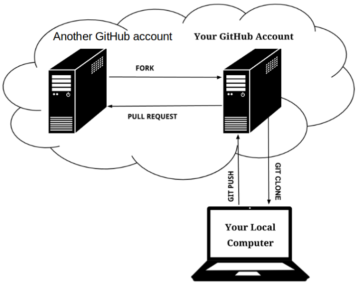

Pull Requests
Last updated on 2026-07-09 | Edit this page
Estimated time: 20 minutes
Overview
Questions
- How can I contribute to a repository to which I don’t have write access?
- Where can I discuss changes to my code?
- What GitHub tools can I use to plan my work?
Objectives
- Understand what it means to fork a repository
- Be able to fork a repository on GitHub
- Be able to submit a pull request
- Be able to create a new issue
- Be aware of GitHub projects
Pull Requests are a great solution for contributing to repositories to which you don’t have write access. Adding other people as collaborators to a remote repository is a good idea but sometimes (or even most of the time) you want to make sure that their contributions will provide more benefits than the potential mistakes they may introduce.
In large projects, primarily Open Source ones, in which the community of contributors can be very big, keeping the source code safe but at the same time allowing people to make contributions without making them “pass” tests for their skills and trustworthiness may be one of the keys to success.
Leveraging the power of Git, GitHub provides a functionality called Pull Requests. Essentially it’s “requesting the owner of the repository to pull in your contributions”. The owner may or may not accept them. But for you as a contributor, it was really easy to make the contribution.
The process
- Find a repository on GitHub that belongs to someone else
-
Fork it (
git cloneit on GitHub’s servers into your GitHub account) -
git cloneit to your PC/laptop - Create a new branch
- Make changes, and push them to your repository on GitHub
- Request that the owner of the repository you forked pulls in your changes

Advice for submitting Pull Requests
- Keep your Pull Request small and focussed (makes it easier to
process)
- Submit one PR per issue
- Create a separate branch for each issue you work on (you can submit a PR from any branch)
- R.T.F.M.
- If the repository has contributing guidelines, read them, and follow the guidance. This gives your PR a better chance of being accepted.
- Some repositories pre-populate the body of the PR or issue message
with a template.
- Follow the instructions (e.g. provide the information requested)
- Consider creating a new issue first to discuss your ideas before submitting a PR. Some repositories ask for this in their contributing guidelines, but this can be a good approach even if it isn’t required, so that you know whether the owner agrees with your suggestion, and might bring up ideas and/or challenges you haven’t considered.
After submitting your pull request
If things go well, your PR may get merged just as it is. However, for most PRs, you can expect some discussion (on GitHub) and a request for further edits to be made. Given your changes haven’t been merged get, you can make changes either by adding further commits to your branch and pushing them, or you could consider rewriting your history neatly using an interactive rebase onto an earlier commit. In either case, your PR will update automatically once you have pushed your commits.
Send me a Pull Request!
Let’s look at the workflow and try to repeat it:
Fork this repository by clicking on the
Forkbutton at the top of the page.
Navigate back to your home directory so you don’t clone into an existing repo in the next step
- Clone the repository from YOUR GitHub account. On
GitHub, click on the green
Codebutton to get the SSH address to clone. You should be running a command like this:
OUTPUT
$ git clone git@github.com:<YOUR_USERNAME>/manchester-papers.git-
cdinto the directory you just cloned.
Create a new branch, then make changes you want to contribute.
bash $ git switch -c <your-new-branch> Commit and
push them back to your repository.
bash $ git push origin <your-new-branch> You won’t
be able to push back to the repository you forked from because you are
not added as a contributor! 2. Go to your GitHub account and in the
forked repository find a green button for creating Pull Requests. Click
it and follow the instructions. 3. The owner of the original repository
gets a notification that someone created a pull request - the request
can be reviewed, commented and merged in (or not) via GitHub.
Using issues for planning and discussion
Issues are a great
way to plan/project manage your own work. You can think of them like a
to-do list, where you create a new branch for each issue, to be merged
into master when completed. They are also a good place for
discussion ahead of creating a pull request. GitHub projects
are a convenient way to project manage your issues via a table and/or
board view.
A nice GitHub integration is that you can close
an issue via a commit message e.g. if you include
Fix #2 in your commit message, it will close issue 2 when
merged into master.
Send yourself a Pull Request!
Pull requests aren’t just for repos where you don’t have write access. You can also create a pull request from a feature branch within your own repo. This is a useful workflow if you would like some input from colleagues - you can request a review and have discussions on the pull request.
- Create a new issue for your repository (e.g. acknowledge funding source)
- Create a new feature branch and switch to it ahead of fixing the issue
- Edit your paper to resolve the issue, and include
Fix #1in your commit message (assuming you’re fixing issue #1). - Push your new feature branch to
origin - Create a new pull request from your feature branch to
master(Look for a green button at the top of thecodetab after pushing) - Merge your pull request on GitHub, under the “Pull requests” tab
- A
forkis agit cloneinto your (GitHub) account - A
pull requestasks the owner of a repository to incorporate your changes - Use issues and GitHub projects to plan your work
- You can discuss code on both issues and pull requests